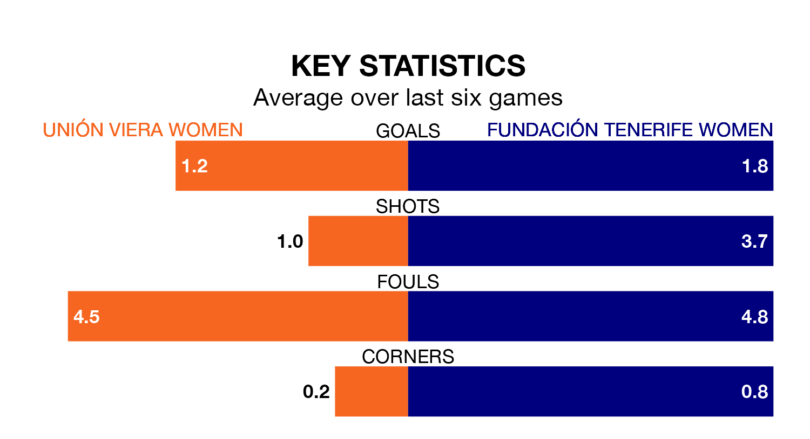

Fundación Tenerife Women visit Unión Viera Women on early Sunday on the back of five consecutive wins in the Segunda Federación Femenina.
Fundación Tenerife have picked up 16 points from their last six games, and they face an Unión Viera side who also won their last match, and have collected 11 points from the last possible 18.
Unión Viera are zero in the table after 20 games, of which they have won five and drawn six, earning 21 points.
Fundación Tenerife are seven places behind the hosts in seventh, with 12 wins and two draws putting them on 38 points.
With 21 goals in 20 games so far this season, Unión Viera are the league's-6th-lowest scorers with 1.0 goals per game. And they are conceding more than average, letting in 34 goals at a rate of 1.7 per game.
The away team, meanwhile, are above average scorers, with 1.5 goals per game, compared to a league average of 1.3. They have conceded 0.7 goals per game.
Unión Viera's last match was on February 10, a 2-1 win against Elche Women, with getting the goals for Unión Viera.
Fundación Tenerife beat Femarguín Women 2-0 last time out, on February 4, with on the scoresheet.
Updated: 13:04 (UTC), 16/02/24